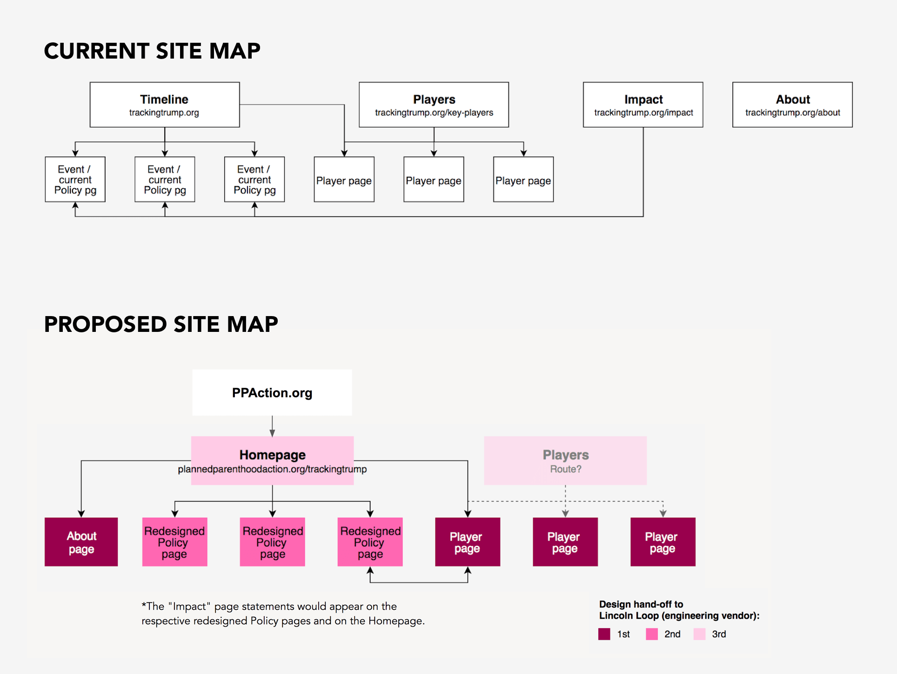
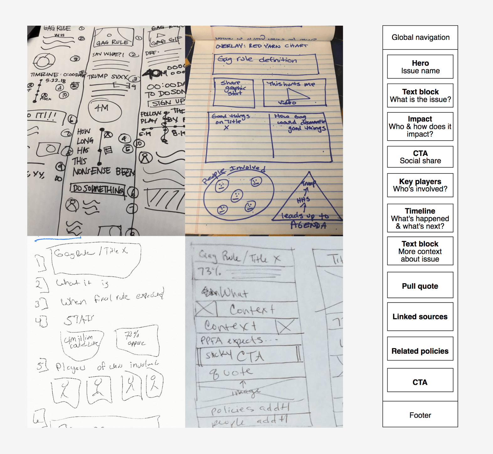
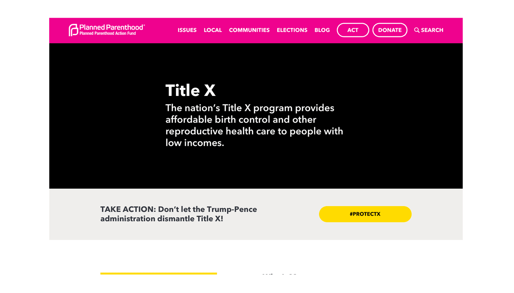
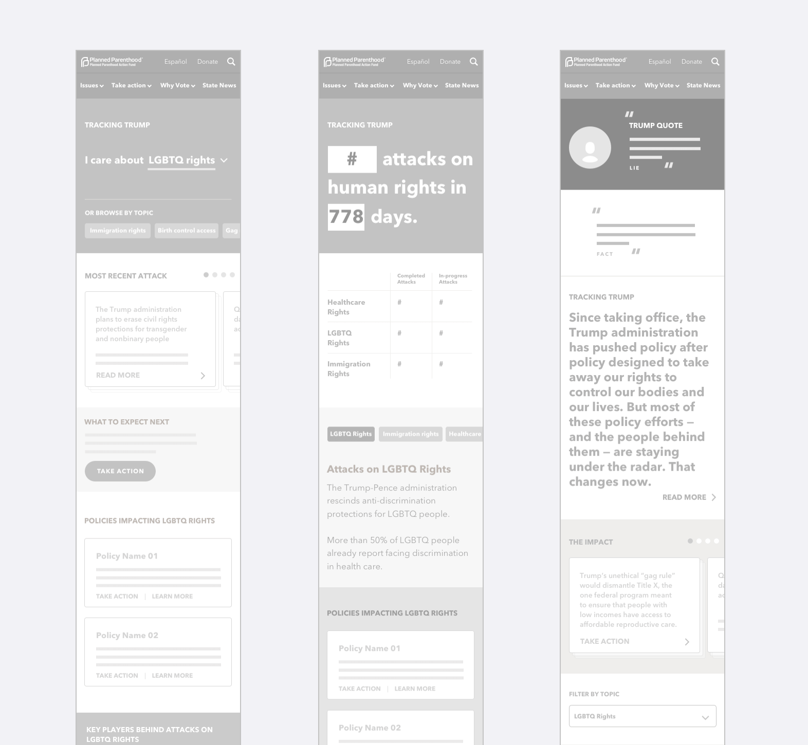
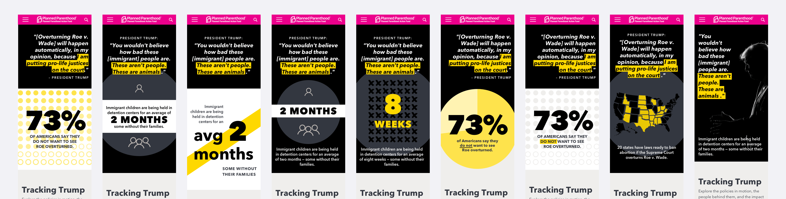
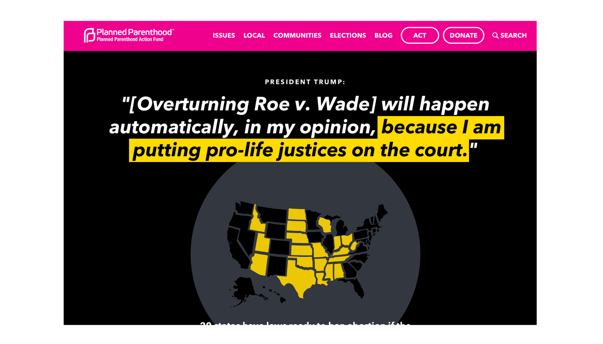

Political microsite
Creating a design system for a scalable content site
Strategic Planning, User Research, Information Architecture, UX Design, Visual Design, Design System, Responsive Web
View projectThe Planned Parenthood Action Fund (PPAF) is the political advocacy arm of Planned Parenthood, and works to protect sexual and reproductive rights and expand access to healthcare. In response to the inundation of news after the 2016 election, the PPAF hired a design agency to build a site that tracked the administration's many offenses to civil rights. After the agency launched the microsite, updating the content was a manual, labor-intensive process for editors that also required internal engineering resources to ship.
I created and standardized a modular design system to house the migrated content within PPAF's CMS for faster publishing. We also used this opportunity to conduct user research and iterate on the site design, which resulted in updating the information architecture, reprioritizing the hierarchy of page content, rewriting policy descriptions into bite-sized, easy to consume nuggets, and driving users to take action.
As the design lead, I was responsible for conducting user research, facilitating design workshops with the team, and designing the user experience and interface. I worked closely with internal stakeholders and an engineering vendor to ship the redesigned microsite in the spring of 2019.

Current and proposed site maps

Sketches from a stakeholder design exercise helped inform the content block wireframes for the policy page

Final design: Policy page, desktop

Concept wireframes for homepage

Visual design options for homepage hero

Final design: Homepage, desktop